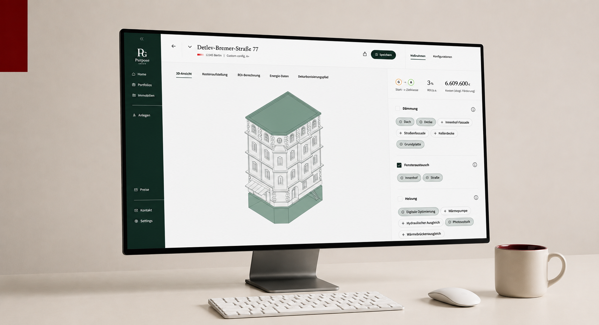
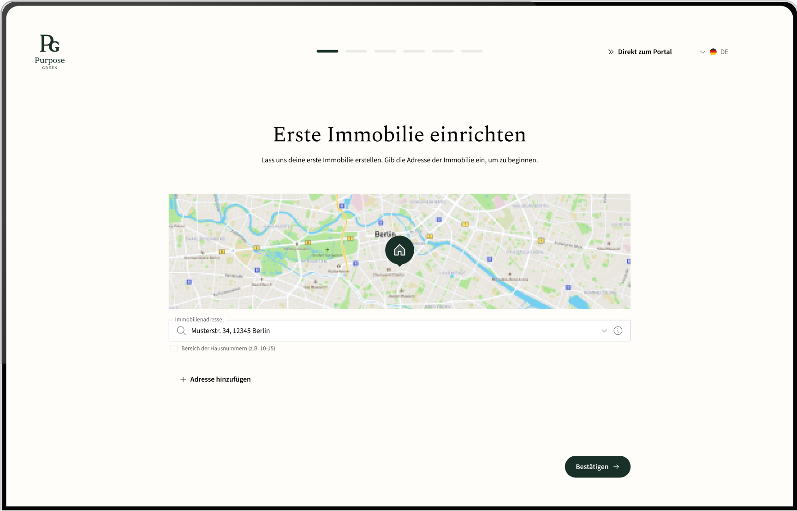
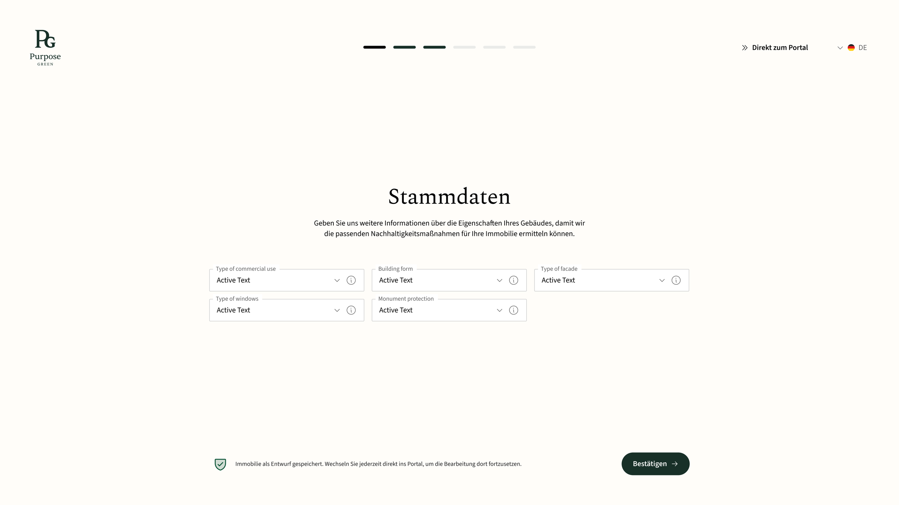
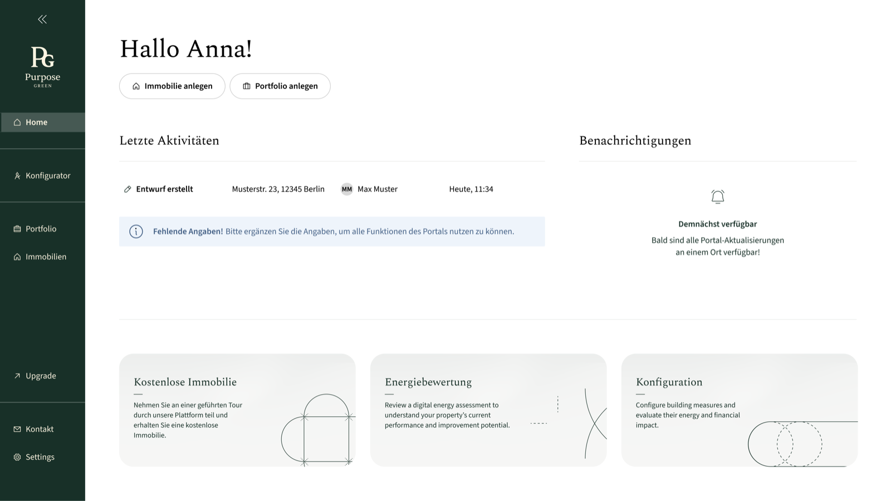

Case study
Configurator
A platform that helps home owners plan and implement energy renovation measures with confidence.
Anna Iarinovskaia
Digital Product Designer

A platform that helps home owners plan and implement energy renovation measures with confidence.
The platform helps users manage and analyze property energy data. Previously, onboarding happened entirely outside the product — a sales team walked each user through setup before handing over access.
With the shift to a freemium model, users could now sign up and begin independently. But the product wasn't ready to receive them—new users arrived at an empty dashboard, with no indication of how to get started or unlock value.
Onboarding shouldn't explain the product — it should drive users to create their first property, where value begins.
Replaced passive onboarding tours and tooltips with a goal-oriented property creation flow. Instead of explaining what the product does, users immediately do the thing that reveals it.

Property details are reduced to only the fields the next step actually needs, deferring everything else until it's relevant.

Users can save as a draft, skip a step, or come back later. Nothing in the flow is a hard gate on reaching the dashboard.
The dashboard homepage itself continues the onboarding, guiding the user toward their next action instead of handing off to an empty screen once setup ends.

Placeholder closing reflection — a short paragraph on what this project taught about onboarding, in hindsight, and what would be approached differently next time.